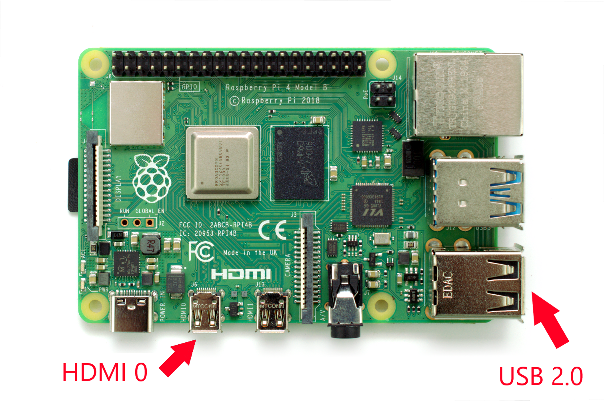

Connecting the Display and the Peripherals
IMPORTANT! DO NOT POWER ON THE PI YET!
For this tutorial, I'll be using the Raspberry Pi Model 4 B, but you can use a different model with just a few changes. To start, you'll want to plug in your keyboard and mouse. I recommend plugging them into the USB 2.0 ports, so that the 3.0 ports remain availiable for things like usb flashdrives that can take advantage of the 3.0's faster speed. Next, plug in the the micro HDMI to the 'HDMI 0' port. If you are running dual monitors, you can plug in to both HDMI ports, but if your are only using one, make sure you plug your cable into the 'HDMI 0' port (The one closer to the power port).
